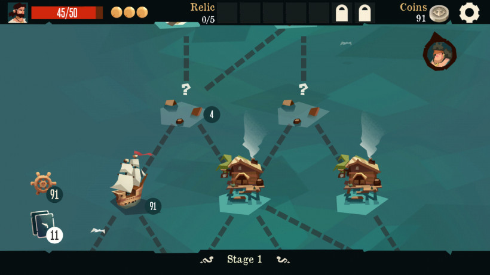
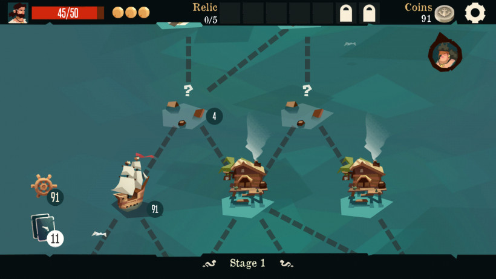
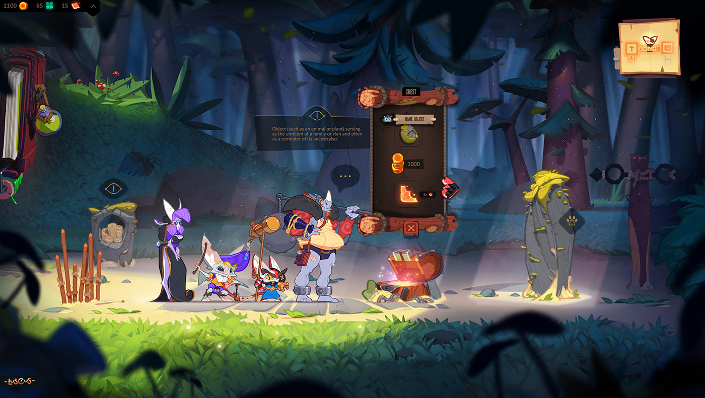
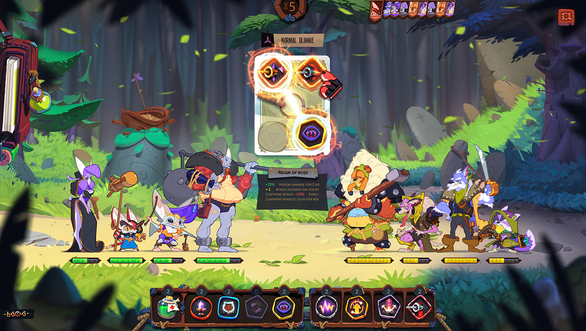
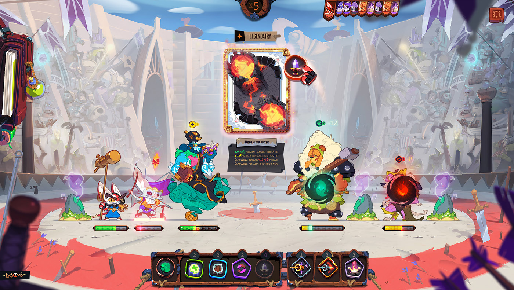
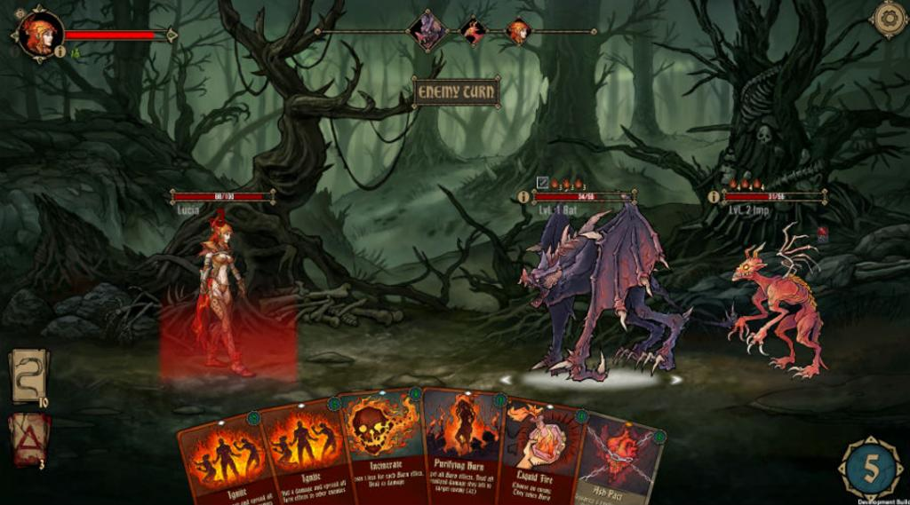
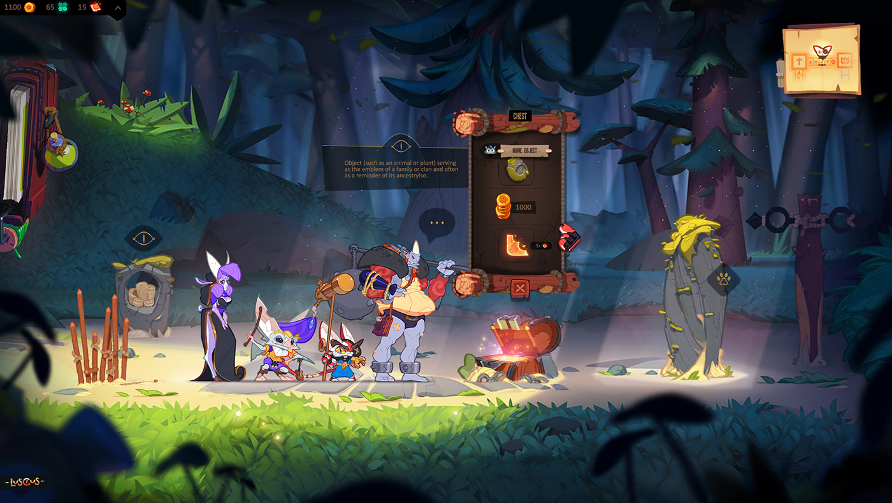
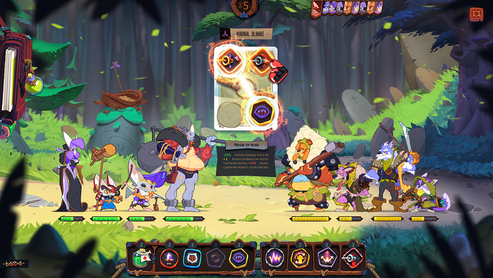
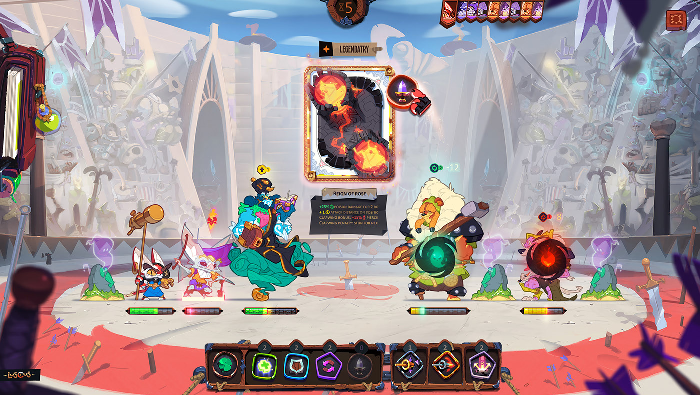
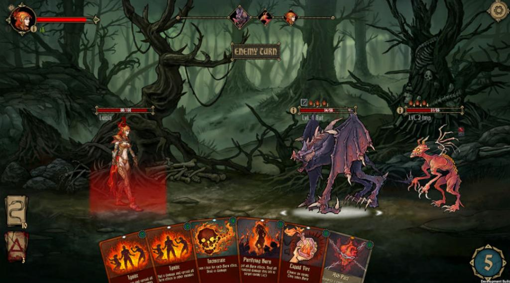

mi idea es crear un juego al estilo "slay the spire" con influencias de "pirates outlaw" con un poco de "darkest dungeon". con una UI y diseño de cartas al estilo de gigantic
features
- idioma de el navegador
- splash screen
- precargar el splash-art durante el splash screen y si esta cargado durar al menos 3s
- splash screen
Ideas
splash
lo primero que quiero mostrar es un splash que tenga el nombre de julif o algo asi
splash art
despues paso a un splash de el juego, el cual puede variar random o para fechas especificas
el splash principal se usa en parte para cargar la imagen de el splash-art, y el splash-art se usa en parte para cargar el menu principal. y aclaro "en parte" por que de estar todo cargado aun asi deberia mostrarse unos segundos.
una vez cargado todo entramos al menu principal
menu principal
me gustan un par de cosas de el menu de otem defiance, como que se vea la versiond el juego a un costado y el logo al otro. tambien me gusto la idea de que una de las opciones en el menu sea comic
en fin, una vez elejida la opcion play se va a abrir la pantalla de seleccion de personajes
seleccion de personajes
seleccion de capitulo
no estoy seguro de como afrontar esta parte, quizas haga falta una pantalla con la seleccion de personajes y otra con los detalles y habilidades y mazos
tambien me gusta la idea de que los personajes tengan skins
una vez terminada la seleccion de personaje entramos al la seccion de seleccion de capitulos o de mapa...aun nose
 

el juego

.jpg) 







las cartas
para las cartas mi idea era que fueran dibujos somples, casi formas geometricas y basarme un poco en ese viejo show de nickelodoen
despues tenemos la pantalla de victoria o derrota